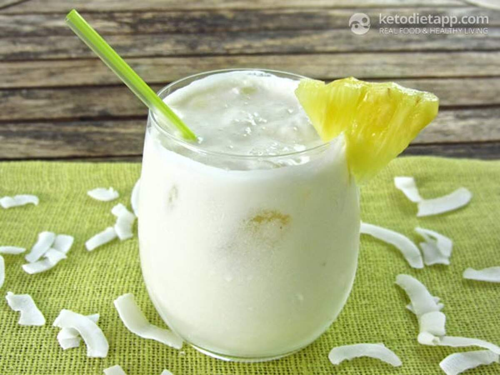

Keto Pina Colada

Description
Ingredients
- 1/2 cup unsweetened coconut milk (120 ml/ 4 fl oz)
- 1/4 cup coconut water (60 ml/ 2 fl oz) or water (+ ice)
- 1 shot dark or white rum (1 1/2 fl oz)
- 1 slice fresh pineapple (28 g/ 1 oz)
- 3-5 drops liquid Stevia extract
Steps
- Before you start making your cocktail, you will need to freeze the coconut water for 1-2 hours in an ice cube tray. Alternatively, you can use regular water and add fresh coconut water directly into the drink.
- Place the pineapple and coconut milk into a blender and pulse until smooth.
- Place the "coconut water ice cubes" into a glass, add rum and pour the blended mixture into a glass. You can optionally place the glass in the freezer for 20 minutes. This will keep the drink cool.
- You can even use a cocktail shaker to create a bit of foam on the top. Just place the ice, coconut milk mixture and rum in and shake well.
- Garnish with a slice of fresh pineapple and serve immediately.